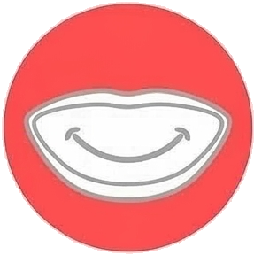
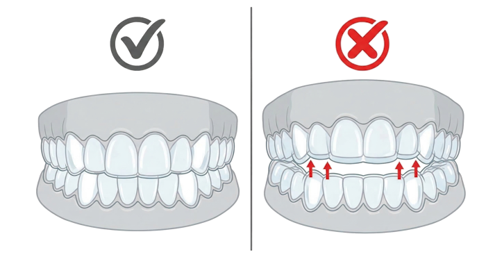

הקשתיות השקופות של pyoor כבר אצלכם בידיים. הנה כל מה שצריך לדעת כדי לעבור את התהליך בהצלחה ולהגיע לתוצאה מושלמת.





הניחו את הקשתית מעל השיניים הקדמיות. לאחר מכן, הפעילו לחץ שווה בעזרת קצות האצבעות על השיניים האחוריות עד שהקשתית מחליקה למקומה באופן מלא.


יש להשתמש בקצות האצבעות בלבד. התחילו מהצד הפנימי של השיניים האחוריות, שחררו צד אחד ואז את השני. יש להשתמש בקצות האצבעות כדי להסיר את הקשתיות החל מהשיניים האחוריות, צד אחד ואז הצד השני.
חשוב - אין להשתמש בחפץ כלשהו כדי להסיר את הקשתיות ואין להפעיל לחץ חזק מידי שעשוי לכופף או לסובב את הקשתית.

אולי ראיתם במארז שלכם כמה שקיות שנראות קצת אחרת. אלו הם הריטיינרים (בעברית: סדי קיבוע).
הריטיינרים נראים כמעט בדיוק כמו קשתיות הטיפול, אבל הם מסומנים באופן בולט כדי שלא תתבלבלו: הם מסומנים באות R או X.
כלום! כרגע הם רק מחכים לכם במארז. אל תפתחו ואל תשתמשו בהם עד שננחה אתכם שהגעתם לרגע המיוחל.
אל דאגה: ברגע שתסיימו את הקשתית האחרונה של הטיפול, אנחנו נשלח לכם מדריך נפרד ומפורט שיסביר בדיוק איך להשתמש בריטיינרים, איך לנקות אותם ואיך לשמור על התוצאה.
(אנחנו בטוח נשמור איתכם)
אנחנו שומרים על קשר רציף לאורך הטיפול כדי לוודא שהכל זורם ומבקשים מדי פעם תמונות למעקב.